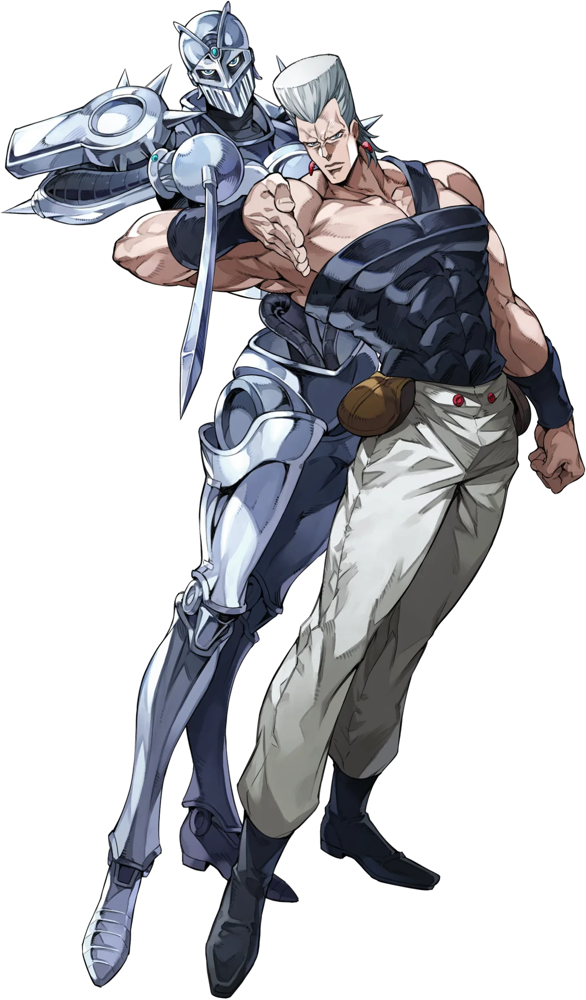

Não foi possível carregar a imagem automaticamente.
Substitua o endereço no atributo src por uma imagem válida de Jean Pierre Polnareff.
Jean Pierre Polnareff
Idade: 23 anos
Aniversário: 30 de novembro de 1965
Signo do Zodíaco: Sagitário
Zodíaco Chinês: Serpente
Ocupação: Desconhecido
Nacionalidade: Francês
Altura: 185 cm
Peso: 95 kg
Habilidades
Stand
O Stand humanóide de Polnareff é Silver Chariot, um dos mais rápidos de todos; utilizando um florete em um ataque flexível e mortal.
Tendo nascido com Silver Chariot, Polnareff afirma ter treinado intensamente com seu Stand, com ótimos resultados. Graças ao seu treinamento, Polnareff é capaz de empunhar habilmente o Silver Chariot e fazê-lo lutar com a perícia de um espadachim experiente, capaz de comandá-lo para cortar ou esfaquear com grande precisão e tempo. Embora a espada seja sua principal característica, Polnareff também pode comandar seu Stand para executar chutes em uma pitada.
História
Em Stardust Crusaders, o francês Polnareff inicialmente aparece como um lacaio de DIO sendo controlado com um esporo de carne. Ele viaja com o Grupo Joestar para vingar sua irmã Sherry, que foi assassinada por um homem com duas mãos direitas. Em Vento Aureo, Polnareff reaparece para ajudar a Equipe Bucciarati rebelde em sua busca para derrotar o chefe da gangue italiana Passione.